Costing
一般：SOLIDWORKS 成本计算工具通过将成本估算和报价过程自动化，帮助计算制造零件的成本是多少。
此工具根据制造成本帮助设计人员做出决定，帮助制造商为客户创建报价。无论您何时更改设计，都可以立即看到更新的成本以及详细的成本细分。
模型分类：
- 机加件
- 钣金件
- 多实体
- 外购件
- 装配体
成本构成
原材料成本
加工时长
机器损耗
单位时间劳动力成本
其它
计算原理：
通过形状识别制造特征，通过特征在模板里的定义进行计算
模型准备
1、数据准备：材质库、特征库、成本数据、costing模板
2、成本规则：钣金件、机加件、采购件
3、报告模板：成本分析报告（字符）
成本属性：
成本相关属性的链接关键字
1 | "SW-Cost-TotalCost@Part.SLDPRT" 总成本 |
设置
设置文件位置
首先请设置文件位置，以便使用针对本课程的正确模板。默认 SW 模板文件夹位置：
模板文件格式为：sldctm 机加，sldctc 多实体，sldcts 钣金
1 | <SW程序目录>\lang\Chinese-Simplified Costing templates |
Costing设置
默认值设置：
预设了Costing的使用值。
模板覆盖：
覆盖模板设置以进行基于偏移的精加工。 您可以输入与机加工表面偏移的值，以便进行精加工和半精加工操作。
查看成本
简单了解机加件的成本
（机加 costing 界面）
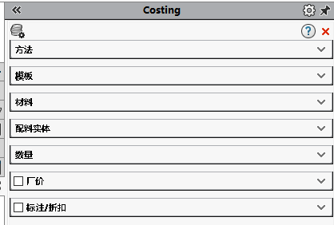（机加 costing 界面）
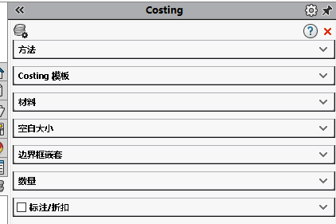钣金模板编辑器
启动编辑器
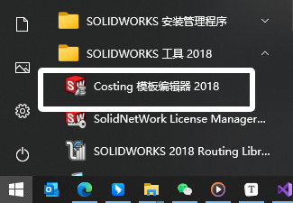常规
使用成本计算模板编辑器中的常规屏幕设置单位和货币选项、厂价和表面粗糙度选项。
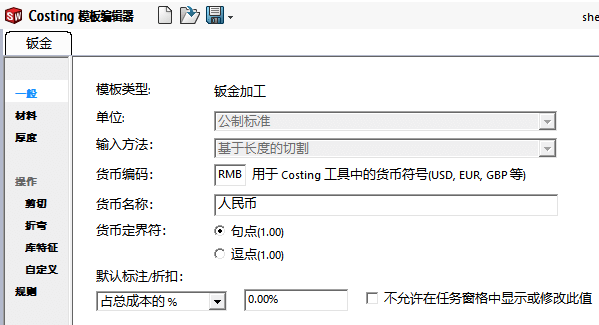材料：
材料选择与 SW 的材质库有关，可以直接选择现有材质库的材料进行添加。
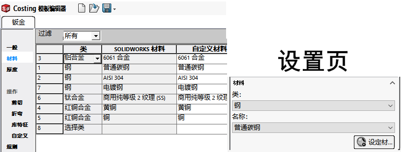
厚度：
在材料基础上添加“厚度”及其“成本”信息；反映到软件使用如下：
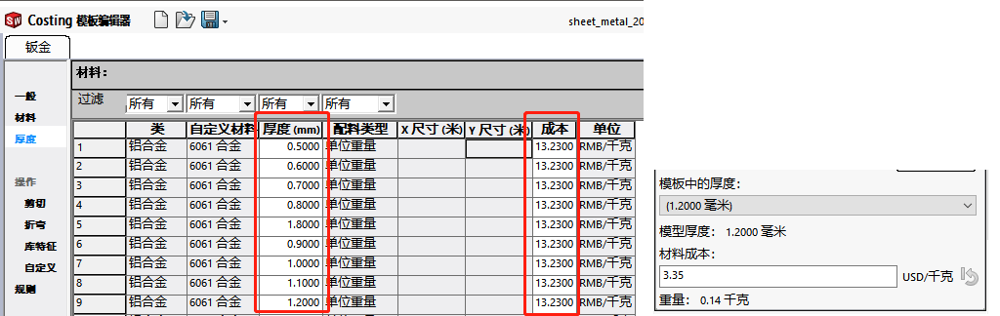
操作：
操作-剪切：
设置切割下料时的成本，包括“切割方法”&“设置成本”（这里我理解是机器的固定成本，如用地用电损耗等）&操作成本。反映到软件使用如下右：
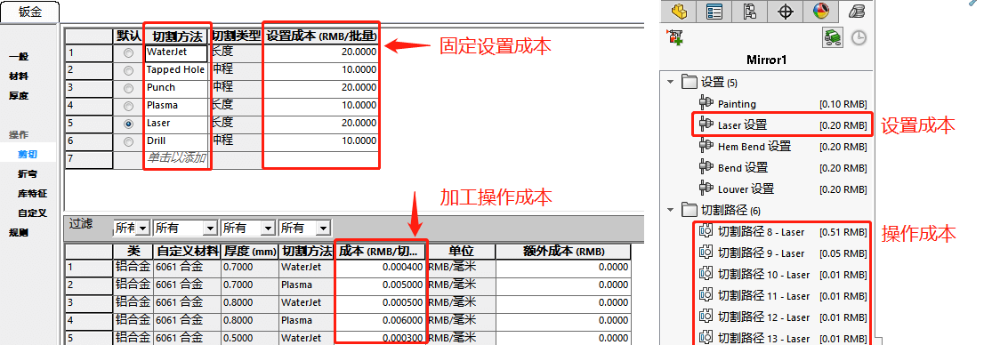操作-折弯：
这里的设置也用上面的“操作-剪切”一样，你需要设置“折弯方法”所对应的“设置成本”和“操作成本”。折弯特征一般有：“折弯”，“褶边”等（下面以折弯Bend做说明）反映到软件使用如下右：
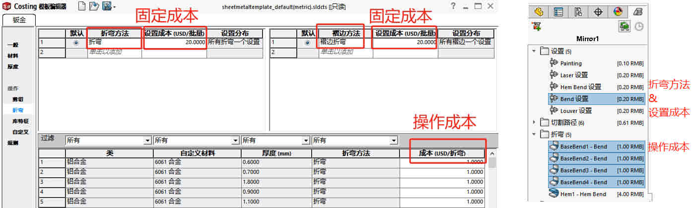操作-库特征：
这里的设置也用上面的“操作-剪切”一样，你需要设置“库特征”“设置成本”“操作成本”。
（这里的库特征要同名）反映到软件使用如下右：
操作-自定义：
自定义通常用于非钣金特征的处理操作（例如：表面处理等）。反映到软件使用如下右：
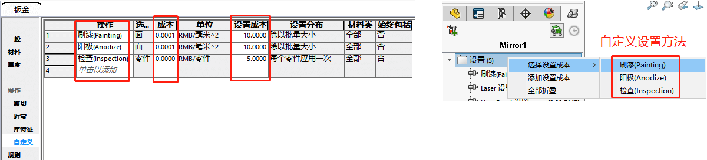机加件模板编辑器
启动编辑器
常规
使用成本计算模板编辑器中的常规屏幕设置单位和货币选项、厂价和表面粗糙度选项。
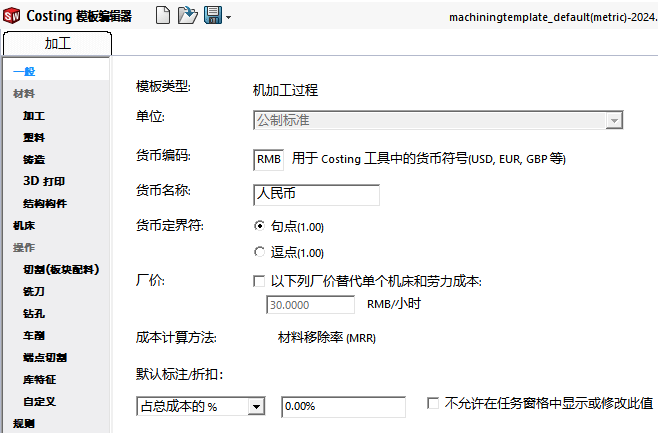材料：
材料选择与 SW 的材质库有关，可以直接选择现有材质库的材料进行添加。这里也可以同个excel表导入方式，填入数据
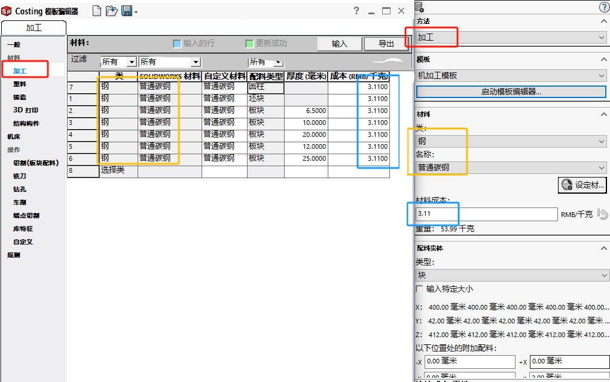配料类型里：
胚块主要针对机加工的铣削件。
板块主要针对板材，即切割下来就可用，厚度方向无需加工。
圆柱主要针对棒料，即车削加工。
方法：
加工：使用 配料材料 中的加工屏幕设置您使用加工制造方法制造加工零件所需的材料。
塑料：使用 Costing 模板编辑器中的塑料屏幕设置您需要使用塑料制造方法制造精加工零件的材料。
铸造：使用 Costing 模板编辑器中的 Costing 屏幕设置您需要使用 Costing 制造方法制造精加工零件的材料。
3D 打印：使用 Costing 模板编辑器中的 3D 打印屏幕设置您需要使用 3D 打印制造方法制造精加工零件的材料。
结构构件：使用 Costing 模板编辑器中的结构构件屏幕设置您需要按拉伸零件制造结构构件的材料。
机床
使用 Costing 模板编辑器中的机床屏幕定义与机加工操作相关的机器和成本。
设置发布：
影响单次加工或批量加工的装夹操作和机器启停操作时间
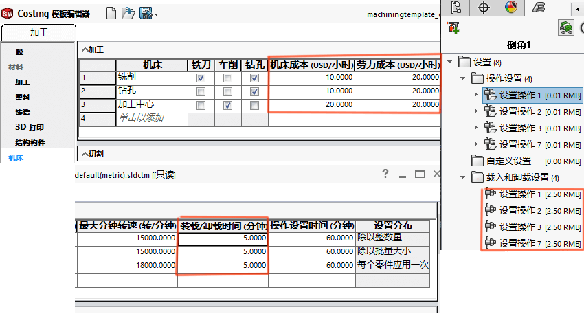操作：
切割(板块配料)
使用成本计算模板编辑器中的切割（板块配料）屏幕定义从板块配料体制造的零件的切割方法的成本。
碾磨
使用 Costing 模板编辑器中的Costing 模板编辑器屏幕过滤与碾磨操作相关的机器。
钻孔
使用 钻孔中的Costing 模板编辑器屏幕定义与钻孔操作相关的机器。
车削
使用 Costing 模板编辑器中的车削屏幕定义与车削操作相关的机器和成本。
端点切割
使用 Costing 模板编辑器中的端点切割屏幕筛选与焊件中端点切割操作相关的机器。
库特征
使用成本计算模板编辑器中的库特征屏幕定义零件的库特征的成本。
自定义
使用成本计算模板编辑器中的自定义屏幕定义有助于核算零件制造成本的其他操作，例如粉末涂层。
修改机加工零件设置
您可以在机加工模板的机器选项卡中指定机加工零件的设置时间。
将模板备注添加至钻孔、碾磨或车削操作
您可以在机加工模板上为碾磨、钻孔或车削工具添加注释。
父主题机加工模板
查找机加工模板信息的位置更新模板材料成本数据创建新的机加工模板编辑机加工模板
规则：
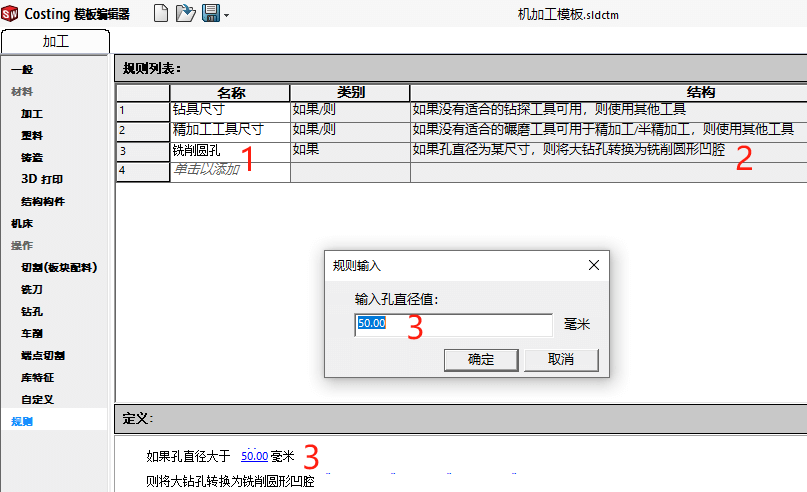多实体
多用于焊件多实体的情况，同装配体类似。我们直接看下面装配体介绍
装配体
常规
装配体的成本计算，归根到底是零件的计算。那么装配体的成本计算模板是参考了两个其他模板：一个针对【钣金实体模板】，另一个针对【机加工实体模板】。
钣金零件的操作
机加工零件的操作
自定义
操作（例如对顶层装配体执行的装配操作、涂刷操作）
焊接
焊接操作
设置操作
采购的零部件
购买的标准件零件，例如：电机、气缸等
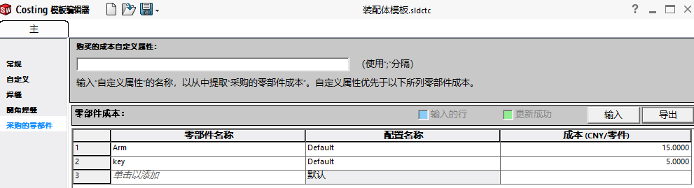Toolbox 零部件
报告：
生成报告
点击右下角“生成报告”按钮，生成分析报告:报告有Word和excel两种形式;
从SW 2017版本开始，报告模板可以自定义。
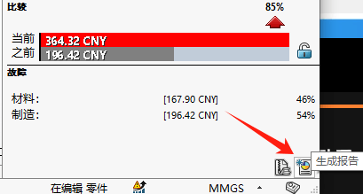 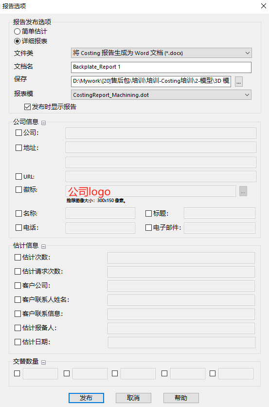材料明细表
使用成本属性列的材料明细表BOM
word文件
创建自定义 Costing 报告
Q&A
1、分析的局限性:主要针对加工过程成本分析，像诸如管理费用、折旧费用、物料损耗等费用无法统计。
2、参数设置偏理想化:像这种操作时间的设置，机床参数的设置、原材料成本的价格等，现实情况是比较复杂多变的，而软件只能设置成固定数值。如果组合设置模板，那模板数量会大大增加。
3、某些参数含义比较费解:像下图中的成本和设置成本就很难理解它们的意义。意义无法理解，那相当于没有根基。
4、钣金件用机加工方式，加工方法选择：“加工的板块”。
单位不匹配
出现在模型类型所用的模板与模型单位不匹配导致